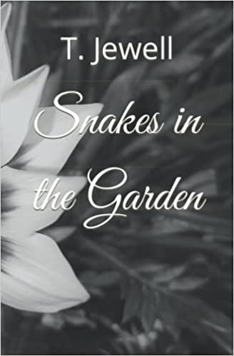
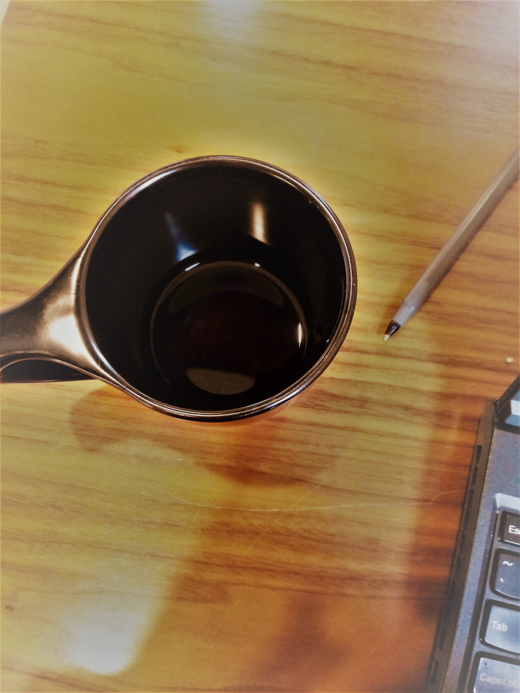

Writing
Poetry
Check out Snakes in the Garden by T.Jewel (AKA Tiler). In a series of poems, our protagonist reflects on their demons throughout a series of unfortunate adventures of lust and love. While right and wrong should seem obvious, the line between fantasy and reality become blurred as they reconcile with higher powers, and ultimately with their biggest demon. Purchase here!
Blog
Key Articles